38 Kelime İkonu — Doğrulama
Her satırda: ikon · Arapça kelime · Türkçe + emoji eşleşmesi
YEMEK / İÇECEK (1–23)
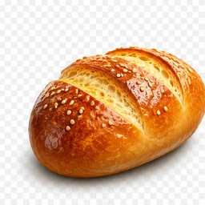
01-ekmek.webp 🍞
خُبْز
ekmek
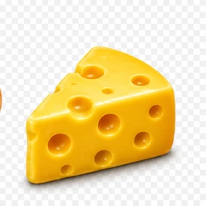
02-peynir.webp 🧀
جُبْن
peynir
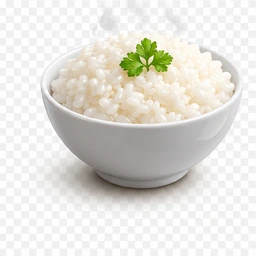
03-pilav.webp 🍚
أُرُز
pilav
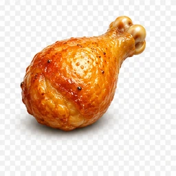
04-tavuk.webp 🍗
دَجاج
tavuk
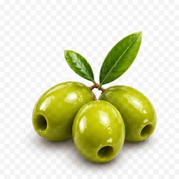
05-zeytin.webp 🫒
زَيْتون
zeytin
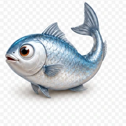
08-balik.webp 🐟
سَمَك
balık
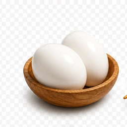
09-yumurta.webp 🥚
بَيْض
yumurta
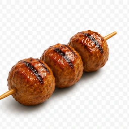
10-kofte.webp 🧆
كُفْتَة
köfte
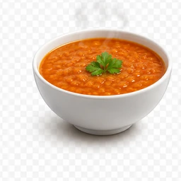
11-corba.webp 🍲
حَساء
çorba
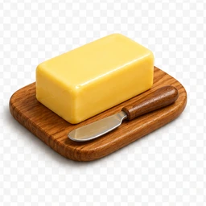
12-tereyag.webp 🧈
زُبْدَة
tereyağ
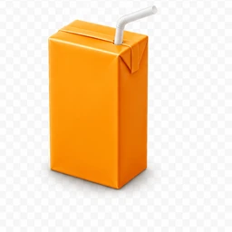
16-meyvesuyu.webp 🧃
عَصِير
meyve suyu
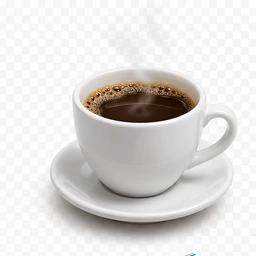
17-kahve.webp ☕
قَهْوَة
kahve
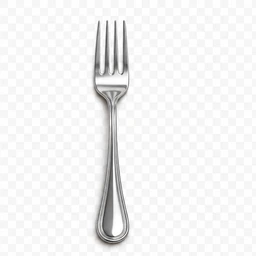
18-catal.webp 🍴
شَوْكَة
çatal
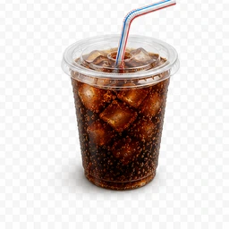
19-bardak.webp 🥤
كَأْس
bardak
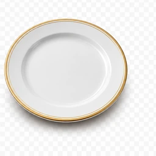
20-tabak.webp 🍽
طَبَق
tabak
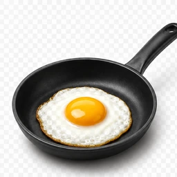
21-omlet.webp 🍳
فَطور
kahvaltı / omlet
22-bicak.webp 🔪
سِكِّين
bıçak
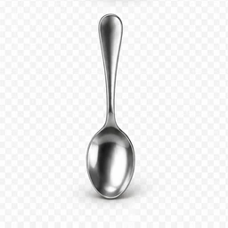
23-kasik.webp 🥄
مِلْعَقَة
kaşık
MEYVE (24–25)
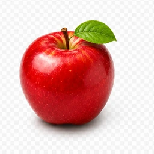
24-elma.webp 🍎
تُفَّاح
elma
ZAMAN / DOĞA (26–31)
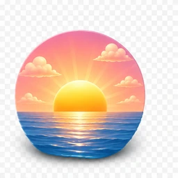
26-sabah.webp 🌅
الصَّباح
sabah / gündoğumu
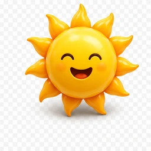
27-gunes.webp ☀️
شَمْس
güneşli
28-ogle.webp 🌤
الظُّهر
öğle (az bulutlu)
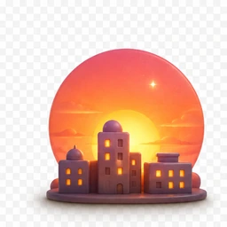
29-aksam.webp 🌆
المساء
akşam
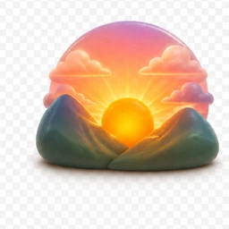
31-fecr.webp 🌄
الفجر
fecr / şafak
YER / AKTİVİTE (32–38)
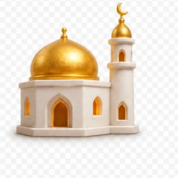
32-cami.webp 🕌
مَسْجِد
cami / namaz
34-okul.webp 🏫
المَدْرَسَة
okul
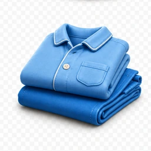
35-kiyafet.webp 👔
مَلَابِس
kıyafet / giyinmek
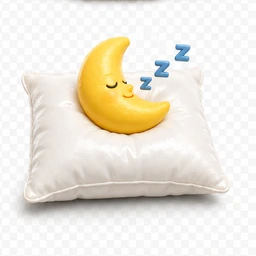
36-uyku.webp 😴
يَنام
uyumak
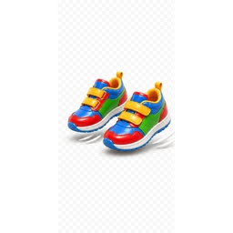
37-yurumek.webp 🚶
يَذْهَب
yürümek / gitmek
38-yardim.webp 🤝
يُساعِد
yardım